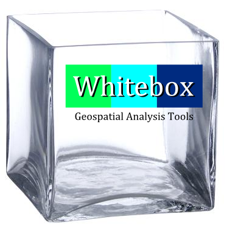
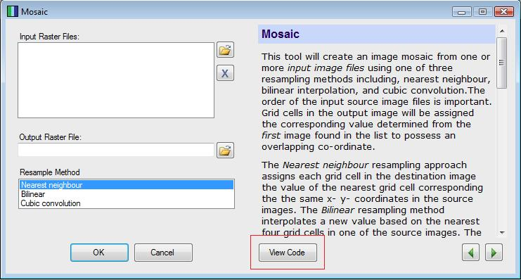
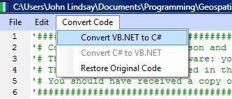

The Whitebox GAT logo is a representation of the Whitebox GAT philosophy and legacy. The green, cyan, and blue background onto which the word 'Whitebox' has been written is an homage to the Terrain Analysis System (TAS), the predecessor of Whitebox GAT. The Whitebox GAT name itself is centred on the side of a glass cube that is missing its top side, a white box. This cube represents Whitebox's open and transparent philosophy. That is to say that the Whitebox GAT project is an open-source software project. Unlike most open-source projects, however, Whitebox has been developed in a way that minimizes the obstacles that frequently serve as barriers between the development community and the user community. Users have the right to know how a particular tool works. There is much to be gained by this. For example, by allowing access to a tool's source code we have the potential to improve existing code and to invite new participants into the development process, perhaps contributing by developing novel geospatial analysis methods that are based on modifications to an existing tool's code. The entire geospatial analysis community then benefits from a more deeply informed user. This is, of course, possible with any open-source GIS/RS software. However, because any large program consists of a massive code base (often hundreds of thousands of lines of code) and complex organizational structures, it can be very difficult to delve into the inner workings of any open-source project's code. This is a particularly daunting task when you simply want to know how one tool or operation works. Imagine how much more difficult this task would be if you could not read the particular programming language that the software was written in? It can be likened to being asked to find a page in a book in a large library without being told what the name of the book is or how the library sorts its resources. Worse yet, the book may be written in a language that you can't read. This requires a level of dedication and patience that few people have. (Proprietary GIS/RS software is like a locked library!) We believe that this is why in large-part many open-source projects have failed to attract large development communities. Most open-source software, even those that have large user-communities, tend to be developed by a small handful of programmers that have been involved from the early period of project.
This is where the concept of Transparency, a novel contribution of the Whitebox GAT project to the open-source movement, in software comes in. The philosophy of transparency in software states that the user 1) has the right to view the underlying workings of a tool or operation (with all the associated benefits to the community as a whole outlined above), and 2) should be able to access this information in a way that reduces, or ideally eliminates, any barriers to viewing and interpreting it. The View Code button that is present on all Whitebox GAT tools is the embodiment of this software-transparency philosophy.

Upon clicking this button, the user is effectively presented with the exact page in the book, in the vast library that is the Whitebox GAT code base. Furthermore, in many cases the user is able to select another option to have the original source code translated into another programming language. For example, if the tool of interest has been written using Visual Basic .NET and the user does not read this programming language, they are able to convert it to C#.

To carry the analogy a step further, Whitebox is much more like getting your information using an Internet web browser with the capability of translating individual web pages, rather than a library with no catalog, containing only latin books, in the case of open-source software, or a locked library, in the case of proprietary software. Although this is still not a perfect solution, in that barriers may still be present in our implementation of the philosophy, it is our hope that Whitebox's approach to geospatial analysis will reduce the challenges associated with gaining a deeper understanding of the workings of various important functions for many users. Imagine how powerful this characteristic could be for teaching new students in the areas of GIS and remote sensing. At last we have a means for educating our geomatics students such that they can gain a deeper understanding of how GIS/RS really works, rather than simply producing generation after generation of refined button-pushers. It is true that if you want to know how to use GIS and remote sensing software, like any other tool, you need to know how it works on the inside. You can only do that when you have the ability to look inside the box and to interpret what you see.
It is my hope that you, the geomatics community, will buy into this new way of thinking about geomatics software, our fundamental tools of the industry, and will take up the challenge with enthusiasm.
John B. Lindsay, November 19, 2009